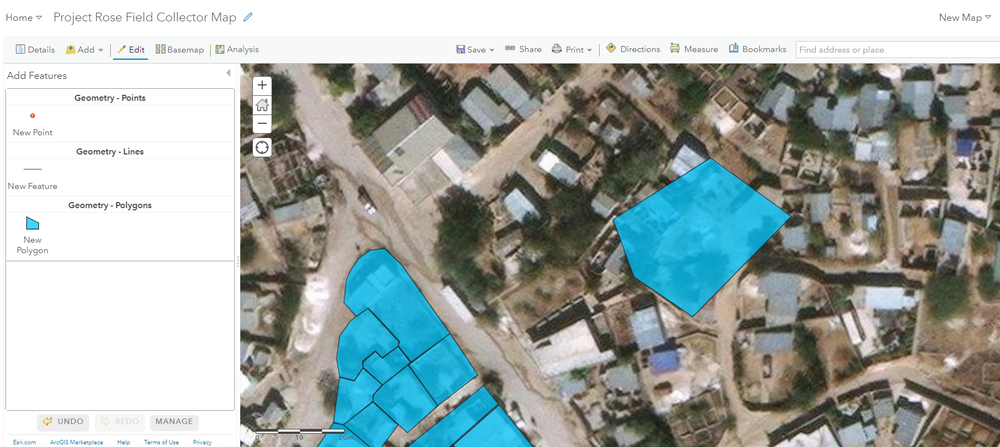
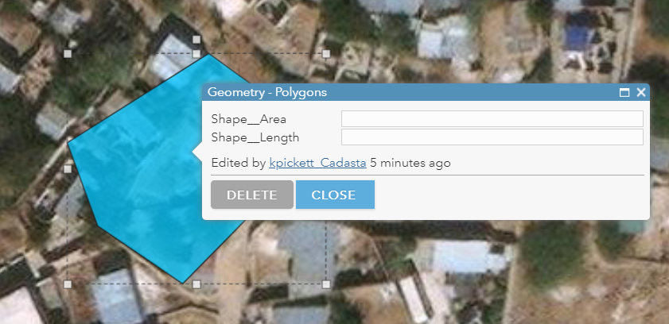
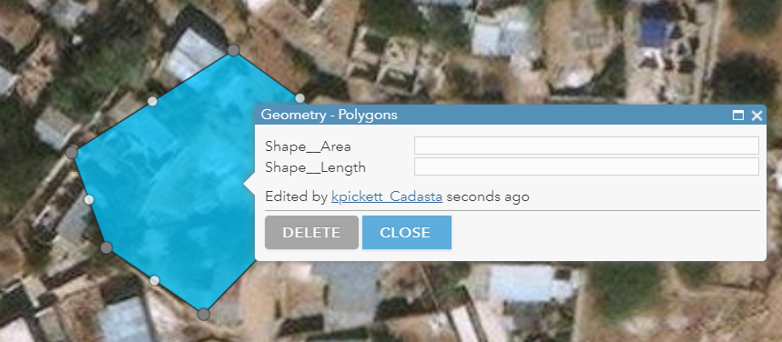
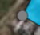
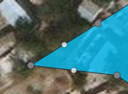
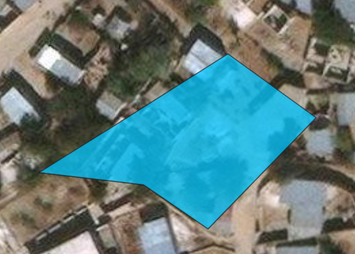
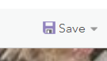

Purpose
This page will explain how to edit the vertices in a polygon in ArcGIS Online
Requirements
- You will need to have a username and password set up for you by a Cadasta team member. If you do not have a user please contact support@cadasta.org
- You will need to sign to your account - see Introduction to your account for a reminder
- You will need to be a member of the group in which the feature has been shared.
Steps
Navigate to map in Map Viewer
Navigate to your desired polygon

Click the polygon once

Pause for 5 seconds
Click the polygon again

Move the vertex


Click anywhere outside of the polygon

Click Save
